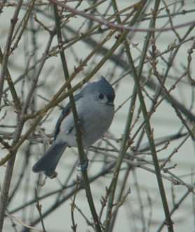

I hear a sweet little whistle – "peeta peeta peeta" - repeated two or three times and look for the tufted titmouse. It is somewhat assertive at feeders, flying in to snap up a sunflower seed and flying away to crack and eat it. It usually travels with the chickadees and nuthatches, so if you see those two birds, the titmouse may be with them. Watch for the gray forehead and crest, gray back and wings with white face and breast and rusty under the wings. There is a black daub above the beak, which is also black, short and sturdy. The outer wing feathers are a darker gray or black. It has an almost bluish cast in certain light. The large black eye is conspicuous. Male and female of the species are the same.
The titmouse is larger than a chickadee – 5 inches long – but has the same perkiness. Its diet is similar to that of the chickadee – insects, seeds and berries in the wild and sunflower seeds and suet at feeding stations. As do the chickadees, they will store food.
The titmice travel in flocks of three to eight birds, though I usually see only one at a time. They often stay with a group of birds in same family: chickadees, nuthatches, Carolina wren. In late winter or early spring the male starts singing and will defend from other titmice his chosen two to five acre territory. Rival males do not do battle but will perch on either side of territory boundaries and sing at each other.
As with cardinals and other species, the male titmouse feeds the female during courtship. She accepts the morsel with her wings fluttering. This mate-feeding continues throughout nest building and incubation. The female is the nest builder, which is in a cavity – a natural hole in a tree or in an old woodpecker nest. They may use a nesting box. The nest is lined with soft materials. Wikipedia reports the titmouse will sometimes pluck hair from a live animal such as a dog! Pieces of shed snakeskin has been found in titmice nests.
The four to eight brown-speckled white eggs incubate for about two weeks. The young fledge in approximately 18 days. One season's young may stay around to help with raising the following season's brood.
A curious little thing, the titmouse has been observed perched on a window sill peering in to see the activity inside. He seems totally "cute," and has endeared himself to many birders, including me.
The titmouse is an acrobatic forager, with movements less rapid than the chickadee but just as thorough. At times I have observed a titmouse perched for perhaps an hour or more on a branch of my maple tree or forsythia bush. Maybe something interesting was going on that he was observing! Perhaps he was observing me observing him! Or maybe just napping.
The titmouse range is practically all over the eastern half of the United States except for the most northern states. The range is extending northward due to the increasing numbers of bird feeders.
